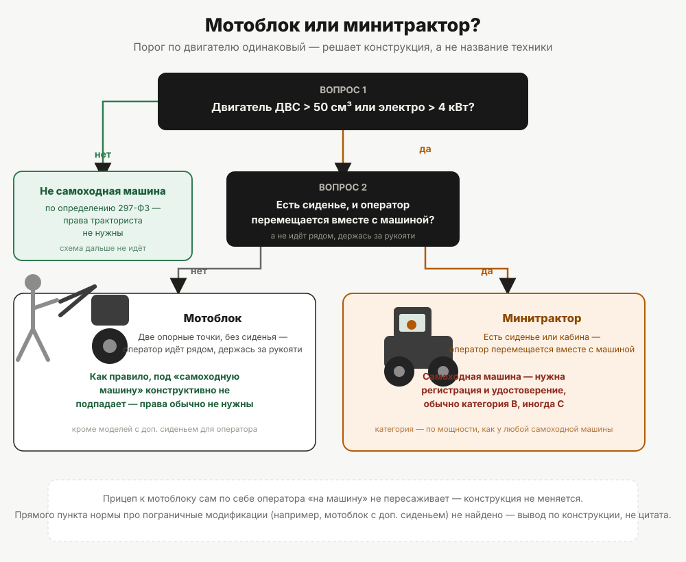

Нужны ли права на мотоблок и минитрактор
Граница проходит не по размеру машины, а по тому, подлежит ли она государственной регистрации. Разбираем критерии и объясняем, почему мотоблок и минитрактор решаются по-разному.
«Это вообще трактор или нет» — вопрос, на который можно спорить долго и без результата: у мотоблока есть двигатель, колёса и рычаги управления, у минитрактора — кабина или хотя бы сиденье, и оба явно не велосипед. Спор о терминах ничего не решает, потому что норма вообще не спрашивает, трактор это или нет. Она спрашивает другое.
Правильный вопрос: подлежит ли машина государственной регистрации
Обязанность получать удостоверение тракториста-машиниста привязана не к тому, как называется техника, а к тому, входит ли она в понятие «самоходная машина» и подлежит ли в связи с этим государственной регистрации в органах гостехнадзора. Если машина регистрируется — на управление ею нужен документ, категория которого определяется мощностью и типом хода. Если не регистрируется — требование о правах, установленное Правилами допуска к управлению самоходными машинами (постановление Правительства РФ от 12.07.1999 № 796), на неё не распространяется.
Понятие «самоходная машина» определено Федеральным законом от 02.07.2021 № 297-ФЗ «О самоходных машинах и других видах техники»: это трактор, самоходная дорожно-строительная, коммунальная, сельскохозяйственная машина, внедорожное автотранспортное средство и другое наземное безрельсовое механическое транспортное средство, имеющее двигатель внутреннего сгорания рабочим объёмом свыше 50 куб. см или электродвигатель максимальной мощностью более 4 кВт. Правила государственной регистрации самоходных машин и других видов техники (постановление Правительства РФ от 21.09.2020 № 1507) в пункте 1 определяют сферу их применения тем же порогом.
Обратите внимание на союз «или»: достаточно превысить хотя бы один из двух порогов — по объёму двигателя внутреннего сгорания или по мощности электродвигателя, — чтобы формально попасть под определение.
Только формального порога недостаточно
Если бы дело было только в объёме двигателя, большинство мотоблоков подпадали бы под требование прав: у типичного мотоблока бензиновый или дизельный двигатель на 4–9 л. с. (примерно 3–6,6 кВт) и рабочим объёмом в несколько сотен кубических сантиметров — то есть формально оба порога превышены с запасом. Но на практике мотоблоки права не требуют почти никогда, и причина не в лазейке, а в конструктивной особенности, которая выводит их из этого определения ещё раньше, чем дело доходит до объёма двигателя.
Мотоблок опирается всего на две точки — свои колёса, — статически неустойчив без рук оператора на рукоятях и не имеет ни сиденья, ни возможности везти на себе оператора или груз: им управляют, идя рядом, а не сидя или стоя на самой машине. Минитрактор устроен иначе — у него есть сиденье (или кабина), и оператор перемещается вместе с машиной, а не рядом с ней. Именно эта разница — «едет вместе с оператором» против «идёт рядом с оператором» — и есть развилка, которая на практике решает вопрос о мотоблоке и минитракторе в разные стороны, при в целом одинаковых порогах по двигателю.

Мотоблок: почему он обычно остаётся за рамками требования
Из сказанного выше следует практический вывод: классический мотоблок без сиденья, управляемый идущим рядом оператором, как правило, не регистрируется в органах гостехнадзора, и требование о правах тракториста-машиниста на него не распространяется. Порог по двигателю здесь роли не играет — мотоблок остаётся мотоблоком независимо от того, 3 у него киловатта или 6.
Ключевое слово — «как правило». Формулировка Правил допуска касается «самоходной машины» как понятия, а конструктивные особенности конкретной модели — отдельный вопрос техники, а не только права. Если мотоблок оснащён дополнительным сиденьем для оператора (такие модификации существуют) — конструкция меняется, а вместе с ней, вероятно, меняется и правовая оценка. Прямого пункта, который разбирал бы именно такие пограничные модификации, в открытых источниках найти не удалось — это тот случай, когда норма прямого ответа не даёт, и разбираться нужно по факту конкретной машины, а не по общему правилу.
Минитрактор: почему он обычно попадает под требование
Минитрактор конструктивно ближе к трактору в привычном смысле: сиденье или кабина для оператора, который перемещается вместе с машиной, а не идёт рядом. При превышении порога по двигателю (что для минитрактора почти всегда так — это техника заведомо мощнее мотоблока) он попадает под определение «самоходная машина», подлежит государственной регистрации в органах гостехнадзора и, соответственно, требует удостоверения тракториста-машиниста на управление им.
Если машина регистрируется — какая категория получится
Дальше вопрос переходит в плоскость обычного определения категории: колёсная машина с двигателем мощностью до 25,7 кВт — категория B; от 25,7 до 110,3 кВт — категория C. Подавляющее большинство минитракторов по мощности укладываются в категорию B или нижнюю часть C. Подробный алгоритм определения категории по параметрам конкретной машины — в статье «Как определить категорию под свою технику».
Прицеп к мотоблоку: меняет ли он ответ
Отдельный вопрос — мотоблок с прицепом. Само по себе агрегатирование с прицепом не превращает мотоблок в машину с сиденьем: конструктивно оператор по-прежнему идёт рядом, даже если за мотоблоком тянется тележка. Но здесь добавляется другой слой требований — не про категорию тракториста, а про допуск конкретно этого прицепа к движению, если вся связка выезжает на дорогу общего пользования.
Выезд на дороги общего пользования: что добавляется
Даже техника, не подлежащая регистрации в гостехнадзоре и не требующая удостоверения тракториста-машиниста, при выезде на дороги общего пользования подпадает под требования законодательства о безопасности дорожного движения — это отдельный правовой слой, не связанный с Правилами допуска напрямую. Открытые источники сходятся в том, что незарегистрированный мотоблок с прицепом на дороге общего пользования может повлечь ответственность именно по этой линии, а не по статье о правах тракториста, но точная норма и состав нарушения для такого случая требуют отдельной проверки, которую эта статья не закрывает. Использование самоходной техники, включая мотоблок, только на собственном участке или в границах частной территории под действие правил о дорожном движении не подпадает.
Где норма не даёт прямого ответа
Если честно — не по каждой модификации мотоблока или минитрактора норма отвечает однозначно. Пограничные случаи (мотоблок с дополнительным сиденьем, самодельная или существенно переделанная техника, редкие модели на стыке двух типов) требуют либо обращения в орган гостехнадзора за консультацией по конкретной машине, либо консультации у специалиста, знакомого с регистрационной практикой именно вашего региона. Общий критерий — регистрация, а не размер или народное название техники — тем не менее остаётся рабочим ориентиром для подавляющего большинства случаев.
Разбор конкретных региональных ситуаций — дача, личное подсобное хозяйство, подрядные работы в Пермском крае — и того, в каком из них без удостоверения действительно не обойтись, — в статье «Дача, ферма, подряд: когда в крае не обойтись без УТМ».
Если ответ по вашей машине оказался «права нужны» — дальше встаёт вопрос об ответственности за управление без документа, пока права не оформлены: разбор — в статье «Ответственность за управление без прав».